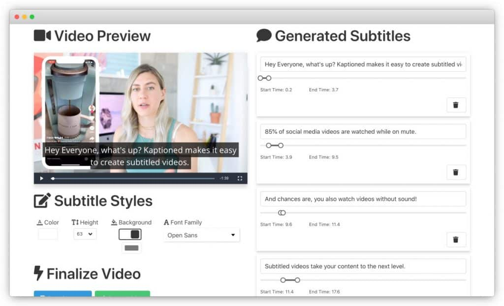

Tornando seu Site inclusivo
Pessoas com deficiencia visual
Os deficientes visuais usam softwares para leitura de tela como o NVDA, para tal e importante observar se seu projeto esta em português pois eles identificam a linguagem e lem na lingua.
<!DOCTYPE html>
<html lang="Pt-br">
<head>
<meta charset="UTF-8">
O termo "alt" é utilizado para que os leitores de tela possam ler a imagem, e se refere a "texto alternativo" vinculado a imagens. O atributo alt é útil não apenas para usuários de leitor de tela, mas também se por algum motivo a imagem não for carregada na página.
<section class="secaoSobre clearfix">
<div class="container">
<img src="img/sobre-apeperia.png" class="secaoSobre-imgDestaque alt="Foto de duas pessoas escrevendo em um quadro branco">
O elemento <desc> do svg é utilizando exatamente para descrição de algum conteúdo e não para o título da imagem, portanto não se trata de um alt
<header class="cabecalho container">
<a href="#" class="cabecalho-logo">
<h1>
<svg width="205" height="59" viewBox="0 0 205 59" version="1.1" xmlns="http://www.w3.org/2000/svg" xmlns:xlink="http://www.w3.org/1999/xlink">
<title< Logotipo da apeperia >title>
<desc < Created using Figma > desc >
<g id="Canvas" transform="translate(-2230 1001)" >
<g id="Logotipo do Apeperia">
Pessoas com deficiencia auditiva
Os deficientes auditivo encontram uma serie de problemas ao acessar sites com baixa usabilidade, e importante deixar na aba de contatos uma opção de mesngaem de texto como rede socias ou email, tendo em vista que não podem fazer ligações.

Outro ponto importante caso exista videos no site e importante que haja legenda para que os surdos possam visualizar os videos
Pessoas com dislexia
Um recurso mais interessante, e que é utilizado pelo Google, é adicionar uma sugestão quando a pessoa começa a digitar no campo. Essa solução pode funcionar como autocorrect. Por exemplo, poderíamos exibir a mensagem Você quis dizer centro universitario eniac.